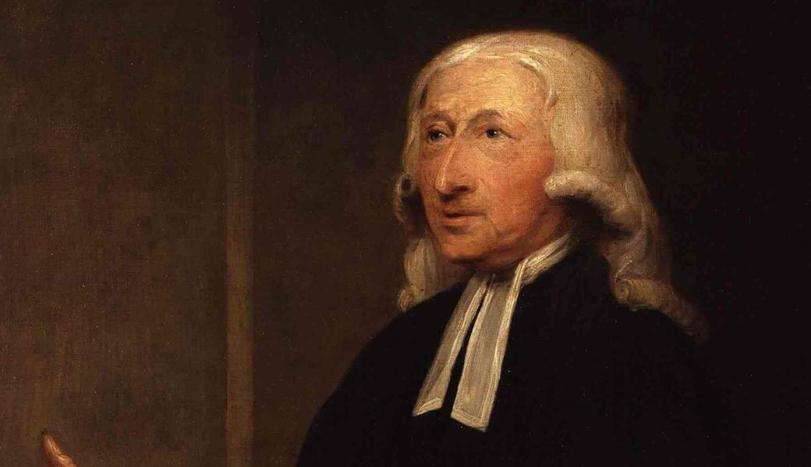

(John Calvin by Noah Parker).
Biblical - John Calvin was a 16th-century French theologian and reformer who played a crucial role in the Protestant Reformation. His Institutes of the Christian Religion was the first systematic theology, and he wrote a commentary on nearly every book of the Bible.
(John Wesley Biography by Donna Wyland).
Self-Work - The 18th century founder of Methodism, John Wesley was known for his disciplined lifestyle, deep faith, and commitment to social reform. His emphasis on personal holiness, community service, and education helped shape a movement focused on continuous spiritual growth and self-improvement. That is why I am making him the face of the self-work section.
(Blaise Pascal from Britannica).
Education - A 17th century French mathematician, physicist, and religious philosopher, Pascal made significant contributions to probability theory, fluid mechanics, and the study of pressure. His Pensées is a seminal work in Christian apologetics, reflecting his deep intellectual and spiritual exploration.